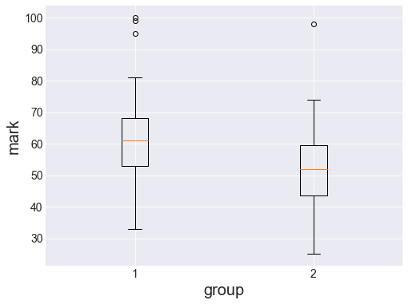
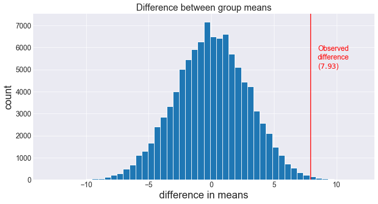

Same difference.
Congratulations! Your simulation code from the previous post has impressed all and sundry and you've been asked to teach introductory statistics to first year students at the prestigious Vandelay University.
You've got 2 stats classes, one with a group of 65 students, and another with a group of 35 students. We assume that the students have been randomly allocated to each group, and that they share the same final exam.
The difference between the groups is the teaching technique employed. With group1 you teach a standard stats course, while with group2 you sometimes use interpretive dance instead of equations to explain statistical concepts.

Let's jump right in.
from math import *
import numpy as np
# suppress warning messages.
import warnings
warnings.filterwarnings('ignore')
# import the scipy module which comtains scientific and stats functions.
import scipy.stats as stats
# usual plotting stuff.
import matplotlib.pyplot as plt
from matplotlib import cm
%matplotlib inline
# set the matplotlib style
plt.style.use("seaborn-darkgrid")
from IPython.core.display import display, HTML
display(HTML("<style>.container { width:100% !important; }</style>"))Here are the marks (out of 100) in the final exam for these two groups.
group1 = np.array([57, 65, 54, 53, 81, 75, 61, 63, 68, 73, 71, 45, 63, 62, 74, 69, 37,
55, 78, 55, 54, 65, 95, 48, 53, 61, 63, 65, 60, 74, 52, 50, 33, 39,
100, 66, 46, 61, 99, 63, 34, 57, 43, 49, 45, 63, 64, 51, 63, 74, 60,
62, 59, 71, 74, 49, 42, 60, 68, 52, 69, 59, 60, 67, 69])
group2 = np.array([40, 50, 25, 43, 37, 36, 62, 58, 58, 62, 45, 44, 40, 43, 53, 51, 38,
59, 55, 62, 71, 40, 60, 49, 61, 53, 74, 49, 73, 51, 59, 52, 98, 57,
52])print(group1.size, group2.size)65 35When you compare the marks between the two groups you notice that, on average, the marks in group2 are lower that those in group1.
diff = group1.mean() - group2.mean()
print(diff)7.934065934065934We can visualise the distribution of marks in both groups using a box plot.
fig = plt.figure(figsize=(8, 6))
plt.boxplot((group1, group2))
plt.xlabel("group", fontsize=20)
plt.xticks(fontsize=14)
plt.ylabel("mark", fontsize=20)
plt.yticks(fontsize=14)
plt.show()
Is this difference in means statistically significant (i.e., should you drop the interpretive dance routine)?
Statistics should be able to provide us with an answer. Thankfully, some of my best friends are statisticians.
I found one of those magnificent statistical creatures, and I asked them about differences between means of two groups.
They mumbled something about beer, students, and tea test or something… I couldn’t tell what they were saying so I went to scipy instead and
it turns out there’s an app for that.
The t-test is a statistical test that can tell us whether the difference in means between our two groups is statistically significant.
First, let us observe that the two groups have similar variances (this allows us to run a particular flavour of the test).
group1.var(), group2.var()(179.0248520710059, 175.55102040816323)Close enough for us. Let’s run the test.
t, p = stats.ttest_ind(group1, group2, equal_var=True)
print(f'Probability that a difference at least as extreme as {diff:0.2f} is due to chance (t test): {p*100:.2f}%')Probability that a difference at least as extreme as 7.93 is due to chance (t test): 0.60%But what does it all mean?
To the simulation!
We are trying to test whether there is a genuine (statistically significant) difference between the two groups.
One way that we can test this is to estimate how likely we are to observe a difference between the means of the two groups of at least 7.93, if we assume that there’s no difference in marks between the two groups (null hypothesis).
We can accomplish that by pooling all the values together and randomly shuffling (assigning) 65 of these values to group1 and the rest to group2.
Using this shuffling scheme, we will get an average difference between the two groups around zero, and the spread of the values we get will tell us how extreme (i.e., unlikely) a value of 7.93 or larger would be under the null hypothesis.
Let’s randomly shuffle the data across the two groups and compute the difference in means 100,000 times. (this may take a moment)
N = 100000
np.random.seed(12345)
# Let's pool the marks together
a = np.concatenate((group1, group2))
i = group1.size
L = []
for _ in range(N):
# shuffle the data using random permutation (most useless code comment ever!)
shuffle = np.random.permutation(a)
# split the shuffled data into 2 groups
grp1, grp2 = shuffle[:i], shuffle[i:]
# compute the difference in means
L.append(np.mean(grp1) - np.mean(grp2))
L = np.array(L)Let’s plot a histogram of the results.
plt.figure(figsize=(12, 6))
plt.hist(L, bins=50, normed=False, edgecolor='w')
plt.title('Difference between group means', fontsize=18)
plt.axvline(x=diff, ymin=0, ymax=1, color='r')
plt.annotate("Observed\ndifference\n($7.93$)", xy=(8.5, 5000), color='r', fontsize=14)
plt.xlabel("difference in means", fontsize=20)
plt.xticks(fontsize=14)
plt.ylabel("count", fontsize=20)
plt.yticks(fontsize=14)
plt.show()
On the histogram, we see that the observed difference is quite far from the mode of the distribution.
In other words, it appears that a difference of 7.93 or more (in magnitude) does not occur very often. Let’s quantify this.
Proportion of simulated trials where the (absolute value of the) difference exceeds the observed difference.
pSim = np.mean((np.abs(L) > diff))
print(f'Probability that the difference at least as extreme as {diff:0.2f} is due to chance (Simulation): {pSim*100:.2f}%')Probability that the difference at least as extreme as 7.93 is due to chance (Simulation): 0.58%This is not too bad considering the true result is 0.60%.
This result means that if we assume that the two groups are sampled from the same population of students, the probability of observing a difference in means of at least 7.93 between the group just by random chance is only around 0.6%.
It is quite typical for the threshold for statistical significance to be set at 5%. Therefore, in this case, we’d conclude that the difference between the two groups is statistically significant. In other words, the teaching method has an impact on the marks. You might want to put that leotard away, stop the gyrations cause that ain’t dancing Sally!